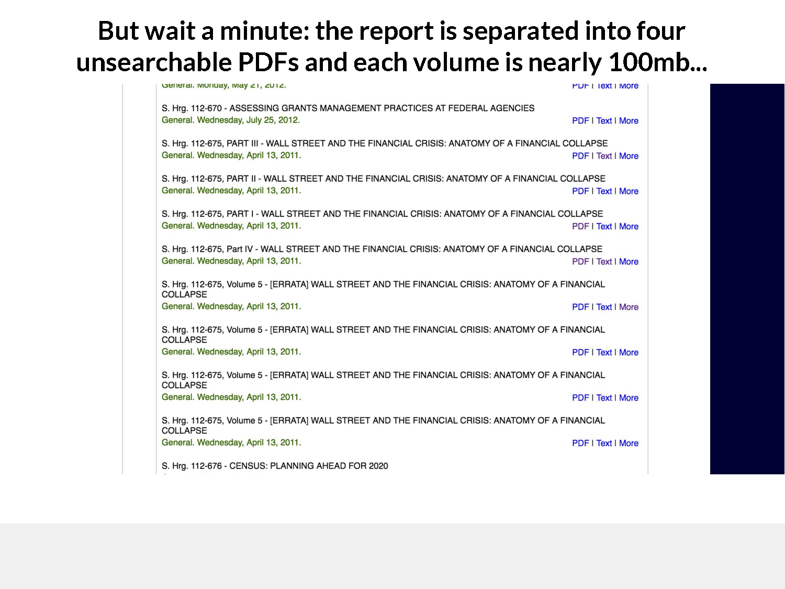

The Demonstration.
The US Senate Case
Researchers must know exactly which Congress a report belongs to before they even begin searching. The reports themselves are split across multiple massive PDFs with broken internal nav.
The Saville Inquiry Case
Even with a bespoke site, page numbers are plain text. Basic digital access often requires direct email correspondence with the National Archives.

